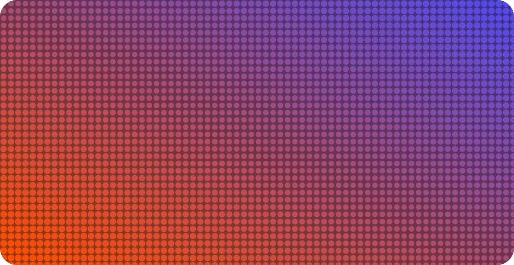

Youth Tech Series · AI & Electronics
Touch the World,
Talk to Code
Use AI to build a fun electronics toy on your laptop — then bring it to life with a banana.
 Chan Meng
Chan Meng
AI & Electronics Workshop · SheSharp × Peyvand Academy × Ministry of Education
13 June 2026 · Fruitvale Primary School, Auckland
Welcome to the AI and Electronics Workshop, run by SheSharp with Peyvand Academy and the Ministry of Education. In the next 20 minutes we will build a real little gadget together, mixing the two things this workshop is about: a bit of electronics and a bit of AI. By the end you will have made a toy you can play with your keyboard now, and with a banana in a few minutes. No coding experience needed.
Big idea
What is the
Internet of Things?
It is just everyday objects that can talk to computers. You already use them every day.
01Your phone
Knows when you tilt or tap it.
02A smartwatch
Counts your steps and heartbeats.
03Smart lights
Turn on when you walk in.
04A game controller
Turns your moves into the game.
Real worldyou touch / move
→
Signala little message
→
Computerreads the message
→
It actssound, light, game
Keep this plain. The Internet of Things is everyday things connected to computers. Point at the four cards. Then walk the bottom strip left to right: something happens in the real world, it becomes a signal, the computer reads it, and the computer does something back. That loop is the whole idea. We are about to build the simplest possible version of it.
The electronics part
Meet Makey Makey
— and its secret
A little board that turns a banana, some foil, playdough, or even your hand into a button.
Its secret: it pretends to be your keyboard.
So any app that works with keys already works with bananas. That means we can build it and play it today with just the keyboard — no board needed yet.
↑
↓
←
→
Space
W
A
S
D
F
G
This is the heart of the talk. Hold up the board if you have one. Makey Makey does one clever trick: to the computer it looks exactly like a keyboard. Touching a banana is the same as pressing the Space bar. These are the keys it can send. Because of that secret, we do not need the hardware to start. We can build our toy now and test it with the keyboard, and later the very same toy will work when you clip on a banana. Nothing in the code has to change.
The AI part
Let's build it —
just by asking
You do not need to know how to code. You tell a free AI tool what you want, in plain English, and it writes the code for you.
A
In your browser
Open a free AI builder and sign in with a Google account. Nothing to install — great on school laptops.
B
On your own computer
Install Cursor — a free code editor for students with AI built in. No credit card needed.
Open one now. We will type the same words together.
Reassure them: you are not expected to write code. You describe what you want and the AI writes it. Give the two free routes. Route A, browser, is the safest bet in a classroom because there is nothing to install. Route B, Cursor, is for anyone who wants to keep building at home on their own computer. Ask everyone to open one of them now so they are ready to type with you on the next slide.
Type this with me
The magic words
Copy this into the AI tool
Make a fun web-page piano. When I press Space, the arrow keys, or W A S D F G, play a different musical note and flash a big colourful button for that key on the screen. Make it work with a normal keyboard.
That is the whole prompt. Press enter and watch it build your toy.
Read the prompt out loud slowly while everyone types it. Keep it exactly this short — it is enough. Stress the last sentence, make it work with a normal keyboard, because that is what lets them play it without the board. Once they press enter, give it a moment to generate. If a few students fall behind, that is fine, the backup demo on the next slide works for everyone.
Try it now
Play it
Run what the AI made and press the keys. Each one should light up and play a note.
No Makey Makey is plugged in yet — this is just your keyboard. Every key on screen is also labelled with the Makey Makey button it will become.
Let them play their own version first. Then switch to the working demo (the orange button) as the reliable shared example — it always works. Press a few keys so everyone hears the notes and sees the keys flash. Point out twice: nothing is plugged in, this is only the keyboard. Show that each on-screen key has a Makey Makey label, so they can already picture which banana will do what. This is the moment to let the room get noisy and have fun.
The bridge
Now add a banana
Clip Makey Makey to fruit, foil, or playdough and those keys become things you can touch. Same toy, same code — just a new way to press the keys.
That is the bridge between the real world and code: your touch becomes a tiny signal, the computer reads it, and your toy responds.
- Swap in your own sounds to make a drum kit.
- Add a score, or turn the arrow keys into a little game.
Connect back to the IoT loop from slide two: real world, signal, computer, action. The big reveal is that adding the hardware changes nothing in the code — the banana just presses Space for you. In a moment they will get the boards and do exactly this. Plant one or two upgrade ideas so the hands-on time has direction: record your own sounds, or add a score. Encourage them to keep asking the AI for changes.
Over to you
Your turn
- 1. Open the AI tool and type the prompt.
- 2. Play your toy with the keyboard.
- 3. Clip on a banana and make it yours.
Next: grab a Makey Makey board and make your toy real. Safety first — only fruit, foil, and playdough. Hold the metal Earth bar so the circuit works. Never use mains electricity.
Thank you — Chan Meng · chanmeng.org · github.com/ChanMeng666
Youth Tech Series · AI & Electronics Workshop · SheSharp × Peyvand Academy × Ministry of Education
Recap the three steps so anyone can repeat this at home. Read the safety line clearly before handing out the boards: conductive food and foil only, hold the Earth bar to complete the circuit, never anything connected to mains power. Then thank them and hand over to the hands-on session. Leave the demo and handout links on screen.